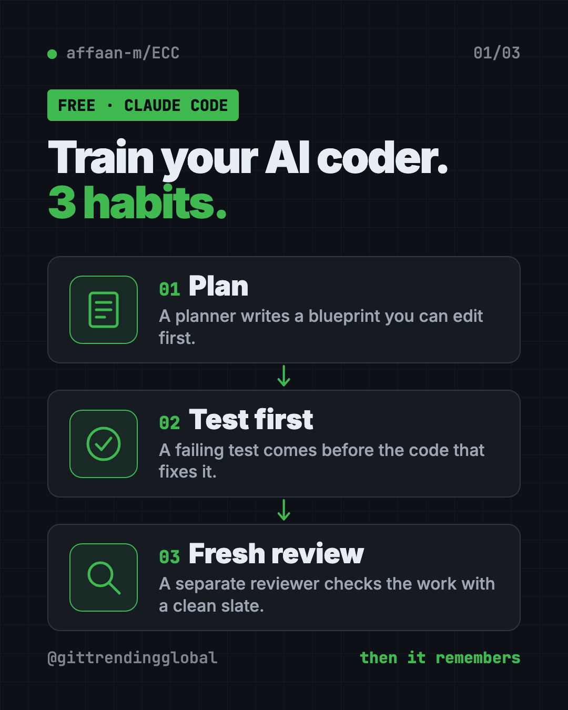
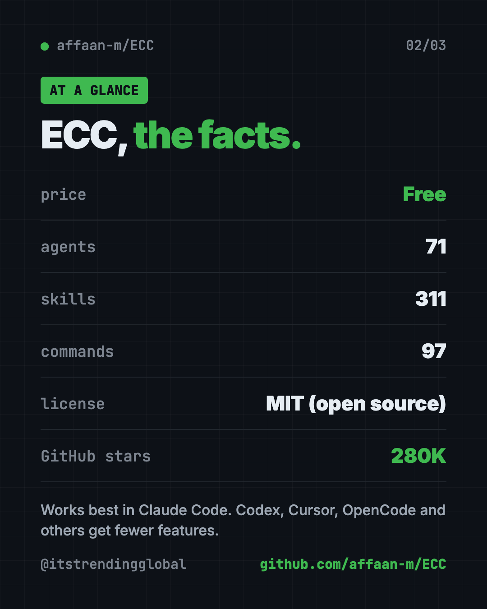
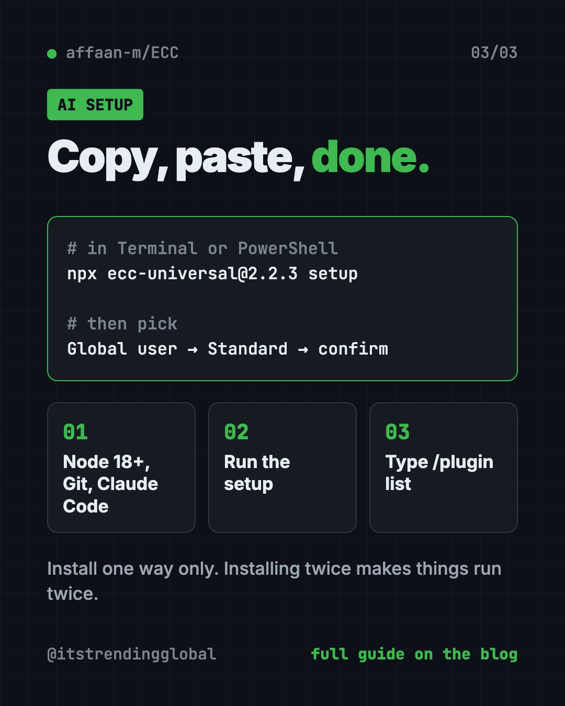

ECC: The Free Claude Code Plugin With 311 Skills (2026)
- Published 15 Oct 2026
- Updated 16 Oct 2026
- 8 min read
- License MIT
- By the ITG Now team
ECC is a free Claude Code plugin that gives your AI coding helper a full work routine: plan, test, build, review, remember. It packs 71 agents, 311 skills and a security scanner into one install.
If you already use Claude Code (Anthropic's AI coding helper) and feel it forgets your rules, this guide shows what ECC adds, how to install it with one command, and how to let the AI set it up for you.
Key takeaways
- Free and open source. The code is MIT licensed. The README says "OSS stays free."
- Big toolkit. 71 agents, 311 skills and 97 older shortcut commands, per the README.
- A routine, not just tips. Your AI plans first, writes tests, then gets a fresh review.
- Works best in Claude Code. Codex and Qoder get their own plugins. Cursor, OpenCode, Gemini and others get fewer features.
- For people who write software. If you have never opened a code project, start with something simpler.
What is ECC?
ECC is a toolkit you install into your AI coding helper. On GitHub it has about 280K stars. Stars are like bookmarks, so a lot of developers keep it handy.
Out of the box, an AI coder is like a smart new hire with no training. It can write code. But it skips the plan, forgets halfway through, and checks its own work with the same blind spots.
ECC fixes that by giving it a fixed way of working. The README sums it up in one line:
plan -> test -> implement -> review -> verify -> remember -> improve
You install that routine once. You stop typing the same instructions into every chat.
Two words help here. An agent is a helper with one focused job, like planning or reviewing. A skill is a written recipe the AI follows for a task, like "write the test first."

How to use ECC (real examples)
The README's advice is to "start with the workflow you need, not the full catalog." Here are everyday ways to do that.
- Plan a new feature. Type
/ecc:plan "add a contact form". A planner agent writes a blueprint you can edit before any code exists. - Fix a bug the safe way. Use the
tdd-workflowskill. It writes a test that fails because of the bug, then fixes the code until the test passes. - Get a second pair of eyes. Type
/code-review. A separate reviewer reads the work with a clean slate, so it catches more. - Repair a broken build. Type
/build-fixwhen your project refuses to compile. - Pick up tomorrow. Type
/save-sessionwhen you stop work and/resume-sessionthe next morning. - Check your setup for risks. Type
/security-scan. The built-in scanner, AgentShield, looks for leaked secrets and risky permissions.
ECC also has reviewers for Python, Go, TypeScript and other languages. Some skills go beyond code, like article writing, market research and pitch decks.
💡 Tip: Start with one habit, like
/ecc:planbefore every feature. Add more once that feels normal.
Is ECC free?
Yes. The toolkit is free and MIT licensed. You can use it, change it and even use it at work.
There is a paid add-on. ECC Pro is a hosted GitHub App for private code projects. The README lists it "from $19/seat/mo." You do not need it to use the plugin.
Your AI coding helper may also cost money on its own. That bill is separate from ECC.
What does ECC add to Claude Code?
Here is the README's own before and after, in plain words:
| Without ECC | With ECC |
|---|---|
| Plans get lost in chat history | Plans become a document you can edit first |
| "Please write tests" is easy to forget | Tests come first, with proof they pass |
| The same AI writes and reviews | A fresh reviewer looks for mistakes |
| Memory means saving a huge chat log | Sessions turn into short notes and reusable skills |
| Your AI setup is trusted by default | AgentShield scans the setup itself for risks |
It also has a guard called GateGuard. It stops risky delete commands before they run.
And it has a Memory Vault. That is a set of plain text notes that Claude, Codex and other helpers can all read. So you can start a task in one tool and finish it in another.
ECC at a glance
| Price | Free (optional ECC Pro from $19 per seat per month) |
| Works offline | No. Your AI coding helper needs the internet |
| Platforms | Mac, Windows, Linux, inside Claude Code, Codex and others |
| License | MIT (open source) |
| What's inside | 71 agents, 311 skills, 97 commands |
| You need | Node.js 18+, Git, Claude Code 2.1+ |
| Best for | Developers who want a ready-made AI coding routine |

How to install ECC
You need three free tools first. Node.js 18 or newer (a program many apps run on). Git (a tool that tracks code changes). And Claude Code version 2.1 or newer.
Open Terminal (Mac) or PowerShell (Windows). Check each tool is there. Copy and paste this:
node --version
git --version
claude --version
Each line should print a number. If one says "not found," install that tool first.
Now run the guided setup. Copy and paste this:
npx ecc-universal@2.2.3 setup
For a typical personal setup, the README says to choose Global user, then Standard hooks, then confirm.
To check it worked, start a new Claude Code session and type this:
/plugin list
You should see ecc@ecc turned on.
Install from inside Claude Code instead
Prefer to stay inside Claude Code? Copy and paste these two lines into it:
/plugin marketplace add https://github.com/affaan-m/ECC
/plugin install ecc@ecc
⚠️ Heads up: Pick one install method only. The README warns that installing twice can duplicate skills, commands and hooks.
⚠️ Heads up: Only install from the official GitHub page, the npm packages
ecc-universalorecc-agentshield, or ecc.tools. The README says unofficial copies "may contain malware."
Let Claude or Codex set it up for you
Claude Code and OpenAI Codex are AI helpers that can run setup steps on your computer. You paste a request, it does the work, and you approve each step.
Copy and paste this:
Please help me install ECC from github.com/affaan-m/ECC.
1. Check that I have Node.js 18+, Git and Claude Code 2.1+. Tell me what is missing.
2. Run: npx ecc-universal@2.2.3 setup
3. Choose "Global user" and "Standard" hooks, and explain each choice first.
4. Confirm ecc@ecc shows up in /plugin list.
5. Show me three ECC commands a beginner should try first.
Then try asking:
Use /ecc:plan to plan a simple contact form for my website. Wait for my OK before coding.
Run a fresh /code-review on what we just built and explain any problems in plain words.
My AI feels slow and forgetful. Run /context-budget and tell me what to switch off.

What are ECC's limits?
- It is a lot. 311 skills is more than anyone needs. Too many extras can crowd your AI's short-term memory, so the README suggests keeping it lean.
- Not equal everywhere. Claude Code gets the full set. The README calls the other adapters "capability-limited."
- It does not cut your AI bill by itself. The README has a token-saving guide, like using a cheaper model for most tasks. Tokens are the small chunks of text AI services charge by.
- It is for coders. The commands assume you know what a project, a test and a build are.
💡 Tip: If things feel slow, the README suggests running
/context-budget, removing rules you don't need and turning off unused add-ons.
Our take
ECC is the "everything included" option for Claude Code. If you want your AI coder to plan, test and review like a careful team, this is a strong starting kit.
What we like:
- One command sets it up, with clear choices.
- The plan, test, review routine is easy to follow.
- A built-in security scanner for your AI setup.
- Shared memory notes between Claude, Codex and other tools.
- The README says it never uploads diagnostics on its own.
What to watch for:
- The sheer size can feel overwhelming at first.
- Fewer features outside Claude Code.
- You still pay for your AI helper separately.
- Fake copies exist, so stick to the official sources.
Want something smaller? Superpowers also makes your AI plan before it builds. gstack is another popular Claude Code setup. To keep your code safe, pair ECC with Cloudflare's free security audit add-on. ECC also made our Q1 roundup of top repos.
FAQ
Is ECC a free Claude Code plugin?
Yes. ECC is free and open source under the MIT license. A paid ECC Pro add-on exists for private repos, but the plugin itself costs nothing.
Does ECC work with Codex and Cursor?
Yes, but not equally. Codex and Qoder have their own plugins. Cursor, OpenCode, Gemini and others get fewer features than Claude Code.
How do I install ECC?
Run npx ecc-universal@2.2.3 setup in your terminal, choose "Global user" and "Standard" hooks, then confirm. You need Node.js 18+, Git and Claude Code 2.1+ first.
Can I use ECC if I'm not a programmer?
It is built for people who write software. A few skills cover writing and research, but the setup and commands assume coding basics.
Does ECC send my data anywhere?
The README says ECC never uploads diagnostics on its own. Your AI coding helper still talks to its own service, as usual.
How do I remove ECC?
The README lists npx ecc-universal@2.2.3 uninstall. Plugin users can also remove ecc@ecc from inside Claude Code.
Get ECC: github.com/affaan-m/ECC
More free security tools
- OpenSEO OpenSEO is a free Semrush alternative for keyword research, rank tracking and site audits. It's open source, and you pay only for the search data you use.
- Cloudflare Security Audit Cloudflare's Security Audit skill is a free AI code security check. It turns your AI coding helper into a careful reviewer that writes a clear report.
Latest AI news
- Meta gives away its big Muse Spark AI for free
- Anthropic puts 5% of its shares in a public fund
- World Bank bets on 'small AI' for poorer countries
- Microsoft pulls out of a UK AI data center deal
Keep reading

REA: Reverse Engineer Anything With Your AI Agent
REA (Reverse Engineer Anything) lets an AI agent look inside an app and explain how a feature works, with proof. What it does, what it misses, and the risks.

DBX: Free Database Client for 100+ Databases, With AI
DBX is a free database client that opens 100+ kinds of databases in a 25 MB app. Its AI helper turns plain English into database queries for you.

PureMac: Free CleanMyMac Alternative, No Subscription
PureMac is a free CleanMyMac alternative. It clears junk, fully uninstalls apps and finds duplicates, with no subscription, no tracking and no scare tactics.